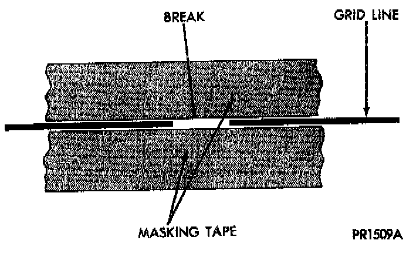

Heated Glass Element: Service and Repair
Rear Glass Heating Grid RepairRepair of the grid lines, bus bars, or pigtail wires can be accomplished using a Mopar Rear Window Defogger Repair Kit (P/N 4267922) or equivalent.
WARNING: MATERIALS CONTAINED IN THE REPAIR KIT MAY CAUSE SKIN OR EYE IRRITATION. THE KIT CONTAINS EPOXY RESIN AND AMINE TYPE HARDENER, WHICH ARE HARMFUL IF SWALLOWED. AVOID CONTACT WITH THE SKIN AND EYES. FOR SKIN CONTACT, WASH THE AFFECTED AREAS WITH SOAP AND WATER. FOR CONTACT WITH THE EYES, FLUSH WITH PLENTY OF WATER. DO NOT TAKE INTERNALLY. IF TAKEN INTERNALLY, INDUCE VOMITING AND CALL A PHYSICIAN IMMEDIATELY. USE WITH ADEQUATE VENTILATION. DO NOT USE NEAR FIRE OR FLAME. CONTAINS FLAMMABLE SOLVENTS. KEEP OUT OF THE REACH OF CHILDREN.

1. Mask the repair area so that the conductive epoxy can be applied neatly Extend the epoxy application onto the grid line or the bus bar on each side of the break.
2. Follow the instructions in the repair kit for preparing the damaged area.
3. Remove the package separator clamp and mix the two conductive epoxy components thoroughly within the packaging. Fold the package in half and cut the center corner to dispense the epoxy
4. For grid line repairs, mask the area to be repaired with masking tape or a template.
5. Apply the epoxy through the slit in the masking tape or template. Overlap both ends of the break by at least 19 mm (0.75 in.).
6. For a terminal or pigtail wire replacement, mask the adjacent areas so the epoxy can be extended onto the adjacent grid line as well as the bus bar. Apply a thin layer of epoxy to the area where the terminal or pigtail wire was fastened and onto the adjacent grid line.
7. Apply a thin layer of conductive epoxy to the terminal or bare wire end of the pigtail and place it in the proper location on the bus bar. To prevent the terminal or pigtail wire from moving while the epoxy is curing, it must be wedged or clamped.
8. Carefully remove the masking tape or template.
CAUTION: Do not allow the glass surface to exceed 204 °C (400 °F) or the glass may fracture.
9. Allow the epoxy to cure 24 hours at room temperature, or use a heat gun with a 260 ° to 371 °C (500 ° to 700 °F) range for fifteen minutes. Hold the heat gun approximately 254 mm (10 in.) from the repair.
10. After the conductive epoxy is properly cured, remove the wedge or clamp from the terminal or pigtail wire. Do not attach the wire harness connectors until the curing process is complete.
11. Check the operation of the rear window defogger rear glass heating grid.